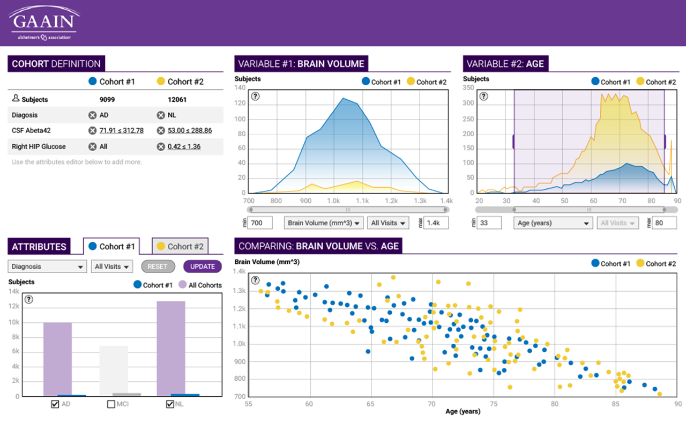

Summary
At the Laboratory of Neuro Imaging (LONI), I had the opportunity to work on the UI of various research applications along programmers and researchers. These applications included the Global Alzheimer's Association Interactive Network (GAAIN) Data Visualizer and LONI Pipeline, both are used globally at numerous research organizations. Both of these projects had their own unique requirements and constrains. Below are some examples.
GAAIN Data Visualizer
This global web application allows Alzheimer's researchers to visualize big data, provided by number of data partners. The primary objective was to offer a user-friendly process with a low learning curve. A secondary objective was to showcase the different data partners.
Besides offering a cleaner interface using basic principles of design, the new design places more emphasis on usability, such as subtle guidance for work flow order, grouping of similar tasks and elements, and heading clarity.
Some requirements and constraints:
- Alzheimer's Association purple color
- All data partners need to be visible
- All graphs need to be visible at the same time
The original UI before redesign has harsh contrast, making it difficult to read. More importantly, there is no apparent work flow for the user to follow.
Preliminary design
Version 1 retains the purple color and introduces new ways to make selection on the graph.

Version 2 lowers contrast, adds data partners, and starts dividing the screen into two main groups.
Final design
Version 3 further distinguishes the two different task groups. Hiding the attribute box allows a better work flow as the user starts from the top left of the screen.
LONI Pipeline
This application is a distributed system for constructing, validating, executing and disseminating scientific work flows on grid computing architectures.
My objectives were to design a comprehensive UI for the web application to be used with smartGWT skinning. The UI needed to be modern, usable, and clean, as not to detract researchers from the work flow. At the same time, the design should fit well with current framework restraints.
Sign-in from the home screen: The sign-in card is minimal and unintrusive (as opposed to a pop-up window in the original design), yet offers the required functionality of the log-in process and account set up.
The connections screen is an example of a modal window in the application.
Here are some sample style tiles that were not implemented.